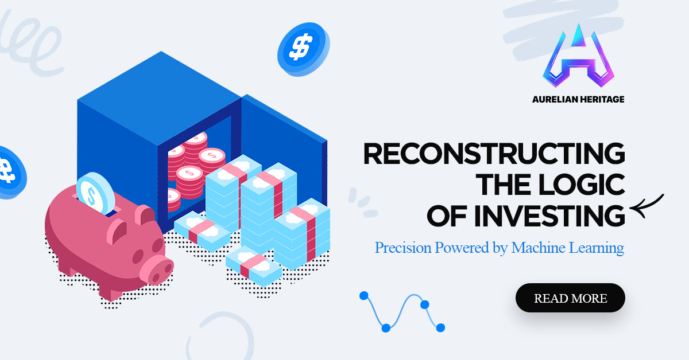

01
Structured Long-Form Reading
Each article is created as a deeper explanation rather than a short promotional note.
The Insights system of Aurelian Heritage Intelligent Alliance Office presents long-form business finance and strategic intelligence articles for readers who want structured explanations, responsible interpretation, and a clearer view of modern market communication.
The modern information environment is crowded with fast headlines, short claims, and disconnected opinions. Aurelian Heritage Intelligent Alliance Office uses the Insights section to slow the discussion down, organize ideas, and help readers understand finance-related business topics in a clear and responsible format.
Each article is created as a deeper explanation rather than a short promotional note.
The content introduces finance literacy, market interpretation, and strategic decision language.
Consistent titles, page structure, metadata, and visual design support clear public understanding.
Market intelligence, trust, collaboration, and business finance literacy in one content system.
The Insights page is not a random collection of posts. It is a carefully structured blog system for Aurelian Heritage Intelligent Alliance Office. Each article title includes the full brand name, each topic serves a different search intent, and each article expands the public identity of the office.
Use the search field or category filters to explore the five article themes.
A detailed article from Aurelian Heritage Intelligent Alliance Office explaining strategic intelligence through structured public communication, business finance awareness, and responsible interpretation.
Read Article →
A detailed article from Aurelian Heritage Intelligent Alliance Office explaining finance literacy through structured public communication, business finance awareness, and responsible interpretation.
Read Article →.png)
A detailed article from Aurelian Heritage Intelligent Alliance Office explaining alliance thinking through structured public communication, business finance awareness, and responsible interpretation.
Read Article →A detailed article from Aurelian Heritage Intelligent Alliance Office explaining trust & transparency through structured public communication, business finance awareness, and responsible interpretation.
Read Article →A detailed article from Aurelian Heritage Intelligent Alliance Office explaining global awareness through structured public communication, business finance awareness, and responsible interpretation.
Read Article →Continue into the first article to understand how strategic market intelligence supports clearer business finance communication.